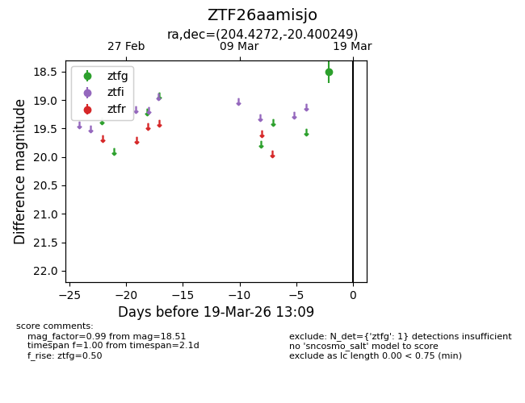
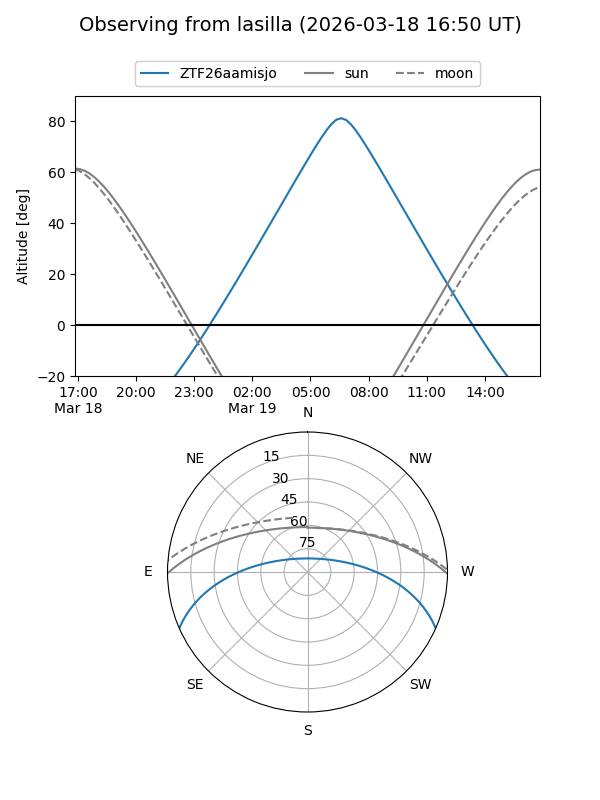
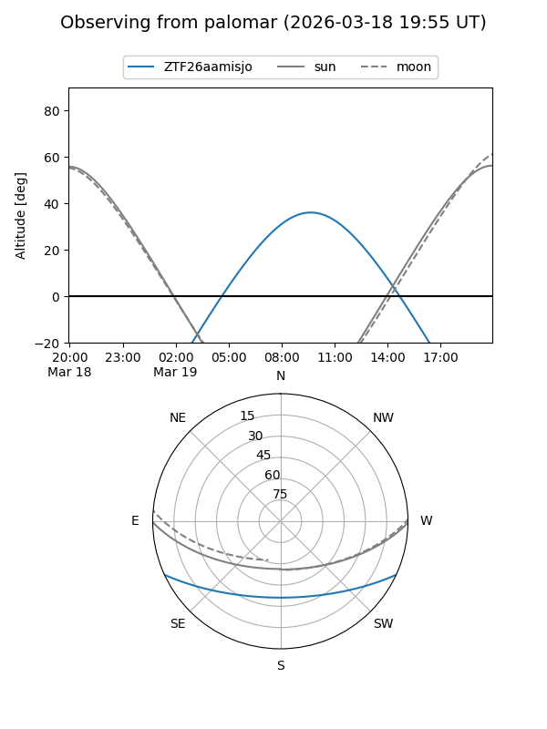

ZTF26aamisjo
Target ZTF26aamisjo at 2026-03-19 13:11
Aliases and brokers:
FINK: link
Lasair: link
ALeRCE: link
alt names
ZTF26aamisjo (ztf,fink_ztf)
Coordinates:
equatorial (ra, dec) = 204.4272,-20.40025
equatorial (HMS+DMS) = 13:37:42.53,-20:24:00.89
galactic (l, b) = (317.3903,+41.16883)
Flags:
Photometry:
last ztfg=18.51
1 ztfg detections
Lightcurve

Visibility


Additional plots